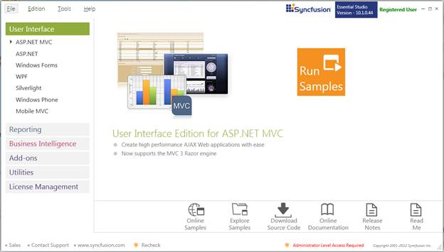
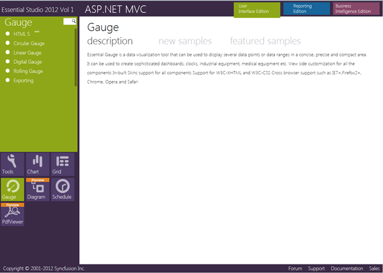

This section covers the location of the installed samples and describes the procedure to run the samples through the sample browser and online. It also provides the location of the source code.
Samples Installation Location
The Gauge MVC samples are installed in the following location, locally on the disk:
C:\Syncfusion\EssentialStudio\<Version Number>\MVC\Gaugemvc\samples\3.5
Viewing Samples
To view the samples:
1. Click Start-->All Programs-->Syncfusion-->Essential Studio <version number> -->Dashboard.
Essential Studio Enterprise Edition window is displayed.

Figure 5: Syncfusion Essential Studio Dashboard
User Interface Edition panel is displayed by default.
2. Click the drop-down button of the ASP.NET MVC platform. The following options are displayed.
· Run Locally Installed Samples - View the locally installed Gauge samples for ASP.NET MVC using the sample browser
· Run Online Samples - View the online Gauge samples for ASP.NET MVC
· Explore Samples - Locate the Gauge samples on the disk
You can view the samples in the preceding three ways.
3. Click Run Locally Installed Samples link. Essential Studio - ASP.NET MVC Edition sample browser is displayed.

Figure 6: ASP.NET MVC Sample Browser
4. Click Essential Gauge under Other Products lists. A list of samples is displayed on the left hand side of the page.

Figure 7: Gauge Samples Displayed in the ASP.NET MVC Sample Browser
5. Select any sample and browse through the features.
Source Code Location
The default location of the Gauge MVC source code is:
[System Drive]:\Program Files\Syncfusion\Essential Studio\[Version Number]\MVC\Gauge.MVC\Src